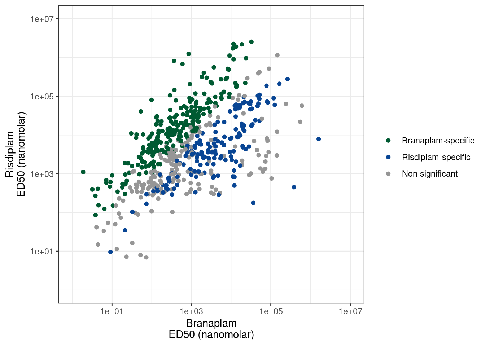

Last updated: 2023-03-07
Checks: 6 1
Knit directory:
20211209_JingxinRNAseq/analysis/
This reproducible R Markdown analysis was created with workflowr (version 1.7.0). The Checks tab describes the reproducibility checks that were applied when the results were created. The Past versions tab lists the development history.
The R Markdown file has unstaged changes. To know which version of
the R Markdown file created these results, you’ll want to first commit
it to the Git repo. If you’re still working on the analysis, you can
ignore this warning. When you’re finished, you can run
wflow_publish to commit the R Markdown file and build the
HTML.
Great job! The global environment was empty. Objects defined in the global environment can affect the analysis in your R Markdown file in unknown ways. For reproduciblity it’s best to always run the code in an empty environment.
The command set.seed(19900924) was run prior to running
the code in the R Markdown file. Setting a seed ensures that any results
that rely on randomness, e.g. subsampling or permutations, are
reproducible.
Great job! Recording the operating system, R version, and package versions is critical for reproducibility.
Nice! There were no cached chunks for this analysis, so you can be confident that you successfully produced the results during this run.
Great job! Using relative paths to the files within your workflowr project makes it easier to run your code on other machines.
Great! You are using Git for version control. Tracking code development and connecting the code version to the results is critical for reproducibility.
The results in this page were generated with repository version ea36e65. See the Past versions tab to see a history of the changes made to the R Markdown and HTML files.
Note that you need to be careful to ensure that all relevant files for
the analysis have been committed to Git prior to generating the results
(you can use wflow_publish or
wflow_git_commit). workflowr only checks the R Markdown
file, but you know if there are other scripts or data files that it
depends on. Below is the status of the Git repository when the results
were generated:
Ignored files:
Ignored: .DS_Store
Ignored: .Rhistory
Ignored: .Rproj.user/
Ignored: analysis/.RData
Ignored: analysis/.Rhistory
Ignored: analysis/20220707_TitrationSeries_DE_testing.nb.html
Ignored: code/.DS_Store
Ignored: code/._DOCK7.pdf
Ignored: code/._DOCK7_DMSO1.pdf
Ignored: code/._DOCK7_SM2_1.pdf
Ignored: code/._FKTN_DMSO_1.pdf
Ignored: code/._FKTN_SM2_1.pdf
Ignored: code/._MAPT.pdf
Ignored: code/._PKD1_DMSO_1.pdf
Ignored: code/._PKD1_SM2_1.pdf
Ignored: code/.snakemake/
Ignored: code/1KG_HighCoverageCalls.samplelist.txt
Ignored: code/5ssSeqs.tab
Ignored: code/Alignments/
Ignored: code/Branaplam_Risdiplam_specific_introns.bed.gz
Ignored: code/Branaplam_Risdiplam_specific_introns.bed.gz.tbi
Ignored: code/ChemCLIP/
Ignored: code/ClinVar/
Ignored: code/DE_testing/
Ignored: code/DE_tests.mat.counts.gz
Ignored: code/DE_tests.txt.gz
Ignored: code/DataNotToCommit/
Ignored: code/DoseResponseData/
Ignored: code/Fastq/
Ignored: code/FastqFastp/
Ignored: code/FragLenths/
Ignored: code/Meme/
Ignored: code/Multiqc/
Ignored: code/OMIM/
Ignored: code/OldBigWigs/
Ignored: code/PhyloP/
Ignored: code/QC/
Ignored: code/ReferenceGenomes/
Ignored: code/Session.vim
Ignored: code/Session2.vim
Ignored: code/SplicingAnalysis/
Ignored: code/TracksSession
Ignored: code/bigwigs/
Ignored: code/featureCounts/
Ignored: code/figs/
Ignored: code/geena/
Ignored: code/hg38ToMm39.over.chain.gz
Ignored: code/igv_session.template.xml
Ignored: code/igv_session.xml
Ignored: code/log
Ignored: code/logs/
Ignored: code/rstudio-server.job
Ignored: code/scratch/
Ignored: code/test.txt.gz
Ignored: code/testPlottingWithMyScript.ForJingxin.sh
Ignored: code/testPlottingWithMyScript.ForJingxin2.sh
Ignored: code/testPlottingWithMyScript.ForJingxin3.sh
Ignored: code/testPlottingWithMyScript.ForJingxin4.sh
Ignored: code/testPlottingWithMyScript.sh
Ignored: code/tracks.xml
Ignored: data/~$52CompoundsTempPlateLayoutForPipettingConvenience.xlsx
Ignored: output/._PioritizedIntronTargets.pdf
Unstaged changes:
Modified: analysis/20230306_CheckIntronsWithUniqueSpecifities.Rmd
Modified: code/scripts/GenometracksByGenotype
Note that any generated files, e.g. HTML, png, CSS, etc., are not included in this status report because it is ok for generated content to have uncommitted changes.
These are the previous versions of the repository in which changes were
made to the R Markdown
(analysis/20230306_CheckIntronsWithUniqueSpecifities.Rmd)
and HTML
(docs/20230306_CheckIntronsWithUniqueSpecifities.html)
files. If you’ve configured a remote Git repository (see
?wflow_git_remote), click on the hyperlinks in the table
below to view the files as they were in that past version.
| File | Version | Author | Date | Message |
|---|---|---|---|---|
| Rmd | ea36e65 | Benjmain Fair | 2023-03-07 | added igv session |
| html | ea36e65 | Benjmain Fair | 2023-03-07 | added igv session |
knitr::opts_chunk$set(echo = TRUE, warning = F, message = F)
library(tidyverse)── Attaching packages ─────────────────────────────────────── tidyverse 1.3.1 ──✔ ggplot2 3.3.6 ✔ purrr 0.3.4
✔ tibble 3.1.7 ✔ dplyr 1.0.9
✔ tidyr 1.2.0 ✔ stringr 1.4.0
✔ readr 2.1.2 ✔ forcats 0.5.1── Conflicts ────────────────────────────────────────── tidyverse_conflicts() ──
✖ dplyr::filter() masks stats::filter()
✖ dplyr::lag() masks stats::lag()I previously made a list of risdiplam/branaplam/C2C5-specific introns based on the dose response experiment. Because the different molecules have different genome-wide effective potencies (ie, 100nM C2C5 is different than 100nM risdiplam, despite them having generally similar specificity profiles), I tested for a difference in the EC50 of each intron for each traitment pair, relative to the genome-wide median. You can see that in a previous notebook I plotted the dose-response datapoints for a random sample of 20 of these significant molecule-specific effects, and they are generally believable effects from those.
GA.GT.Introns <- read_tsv("../output/EC50Estimtes.FromPSI.txt.gz")
ColorKey <- c("Branaplam-specific"="#005A32", "Risdiplam-specific"="#084594", "Non significant"="#969696")
P1.dat <- GA.GT.Introns %>%
mutate(Color = case_when(
EC.Ratio.Test.Estimate.FDR_Branaplam.Risdiplam > 0.05 ~ "Non significant",
ECRatio.ComparedToGenomewideMedian_Branaplam.Risdiplam > 1 ~ "Risdiplam-specific",
ECRatio.ComparedToGenomewideMedian_Branaplam.Risdiplam < 1 ~ "Branaplam-specific"
))
ggplot(P1.dat, aes(x=ED50_Branaplam, y=ED50_Risdiplam, color=Color)) +
geom_point() +
scale_x_continuous(trans='log10', limits = c(1, 1E7)) +
scale_y_continuous(trans='log10', limits = c(1, 1E7)) +
scale_color_manual(values=ColorKey) +
labs(x= "Branaplam\nED50 (nanomolar)", y= "Risdiplam\nED50 (nanomolar)", color=NULL) +
theme(legend.position='bottom') +
theme_bw()
| Version | Author | Date |
|---|---|---|
| ea36e65 | Benjmain Fair | 2023-03-07 |
P1.dat %>%
count(Color)# A tibble: 4 × 2
Color n
<chr> <int>
1 Branaplam-specific 240
2 Non significant 200
3 Risdiplam-specific 161
4 <NA> 2878Ok, so each point is a branaplam-specific or risdiplam-specific GA-GT intron. There are 200 non-significant points, 161 risdiplam-specific points, and 240 branaplam-specific points. I think it will be useful for Jingxin to be able to easily visualize these before validating them… Some introns that change PSI from 1% to 3% might be very significant, but not the best for validation. Furthermore, not all of these events might be involved in poison exon inclusion. Some of them might just be alt 5’ss or something. And these details might inform which are the best candidates for validation by flanking PCR primers. Also, when looking at the data, some of the ‘risdiplam-specific’ introns I called are just not believable effects. Like the dose-response data points might just be too noisy. I did a reasonable job of filtering these out, and trying to make the FDR estimate reasonably calibrated… Or like there are some examples where it appears ‘risdiplam-specific’ but it is because the cryptic event is only just barely visible at the highest dose of risdiplam, and not visible in any of the branaplam doses (so it just requires a really really high dose to see the effect). So for all these reasons, it will be best to check the raw coverage data first… So I’ll write the out this list as a bedfile for easy viewing in IGV, a save a session that has the bedfile loaded, along with bigwigs for the dose response experiment so hopefully it will be easy to view.
P1.dat %>%
dplyr::select(chrom=`#Chrom`, start, end, junc, score=ECRatio.ComparedToGenomewideMedian_Branaplam.Risdiplam, strand=strand.y, Color) %>%
filter(!is.na(score)) %>%
mutate(thickStart = start, thickEnd=end, Color=recode(Color, !!!ColorKey)) %>%
mutate(RgbCol = apply(col2rgb(Color), 2, paste, collapse=',')) %>%
dplyr::select(chrom:strand, thickStart, thickEnd, RgbCol) %>%
arrange(chrom, start, end) %>%
write_tsv("../code/Branaplam_Risdiplam_specific_introns.bed", col_names = F)bgzip ../code/Branaplam_Risdiplam_specific_introns.bed
tabix -p bed ../code/Branaplam_Risdiplam_specific_introns.bed.gzSo to view, you will need to use the globus link I shared with
Jingxin to download the code directory, or at minimum
download the code/bigwigs folder of bigwig files, the
code/tracks.xml IGV session, and the
code/Branaplam_Risdiplam_specific_introns.bed.gz and
code/Branaplam_Risdiplam_specific_introns.bed.gz.tbi. Then,
from IGV, go to File >> OpenSession and open the tracks.xml. The
tracks.xml uses relative filepaths so you need to preserve the relative
filepaths of the thing you downloaded (that is, they need to all be in
the same folder, such as a folder named code).
Now you should be able to select the
Branaplam_Risdiplam_specific_introns.bed track, and Ctl-F
or Ctl-B to jump to the next GA-GT introns, colored according to
significance. Browse around to find coordinates of potential splice
events for validation.
Here are screenshots of a few examples…
BranaSpecific1
BranaSpecific2
RisdiSpecific1
In general, I’m noticing there a quite a few believable branaplam-specific examples but the risdlam-specific are for the most part very small specificity effect sizes. That is, there are very few obviously risdiplam-specific events, compared to branaplam-specific events.
Let’s list the top risdi-specific introns in the following table:
P1.dat %>%
arrange(desc(ECRatio.ComparedToGenomewideMedian_Branaplam.Risdiplam)) %>%
head() %>%
knitr::kable()| junc | #Chrom | start | end | gid | strand.y | seq | Donor.score | gene_names | gene_ids | SpliceDonor | UpstreamSpliceAcceptor | IntronType | Steepness | LowerLimit | UpperLimit | ED50_Branaplam | ED50_C2C5 | ED50_Risdiplam | spearman.coef.Branaplam | spearman.coef.C2C5 | spearman.coef.Risdiplam | EC.Ratio.Test.Estimate_Branaplam.C2C5 | EC.Ratio.Test.Estimate_Branaplam.Risdiplam | EC.Ratio.Test.Estimate_C2C5.Risdiplam | ECRatio.ComparedToGenomewideMedian_Branaplam.C2C5 | ECRatio.ComparedToGenomewideMedian_Branaplam.Risdiplam | ECRatio.ComparedToGenomewideMedian_C2C5.Risdiplam | EC.Ratio.Test.Estimate.P_Branaplam.C2C5 | EC.Ratio.Test.Estimate.P_Branaplam.Risdiplam | EC.Ratio.Test.Estimate.P_C2C5.Risdiplam | EC.Ratio.Test.Estimate.FDR_Branaplam.C2C5 | EC.Ratio.Test.Estimate.FDR_Branaplam.Risdiplam | EC.Ratio.Test.Estimate.FDR_C2C5.Risdiplam | Color |
|---|---|---|---|---|---|---|---|---|---|---|---|---|---|---|---|---|---|---|---|---|---|---|---|---|---|---|---|---|---|---|---|---|---|---|
| chr2:72179461:72182894:clu_4568_- | chr2 | 72179461 | 72182894 | chr2_clu_4568_- | - | GAGAGTAAGTA | 6.005894 | EXOC6B | ENSG00000144036.16 | chr2.72182894.- | chr2.72182903.- | Annotated | -2.7570544 | 3.1361062 | 31.384932 | 2.495499e+09 | 248.12468 | 785.0629479 | 0.2277339 | 0.5594024 | 0.9139077 | 1.005744e+07 | 3178724.1044 | 0.3160571 | 7.482724e+06 | 25547101.480 | 3.0610287 | 0.0000000 | 0.0000000 | 0.0000000 | 0.0000000 | 0.0000000 | 0.0000000 | Risdiplam-specific |
| chr13:20404741:20405904:clu_25569_- | chr13 | 20404741 | 20405904 | chr13_clu_25569_- | - | GAGAGTAAGTC | 5.446634 | CRYL1 | ENSG00000165475.15 | chr13.20405904.- | chr13.20405997.- | Alt 5’ss | -2.8191629 | 3.3431713 | 48.302244 | 1.641993e+09 | 1400.00395 | 4071.6117233 | 0.1740777 | 0.6024948 | 0.9128709 | 1.172849e+06 | 403278.4047 | 0.3438452 | 8.725985e+05 | 3241109.952 | 3.3301579 | 0.0000000 | 0.0000000 | 0.0000000 | 0.0000000 | 0.0000000 | 0.0000000 | Risdiplam-specific |
| chr9:108931201:108933271:clu_18237_- | chr9 | 108931201 | 108933271 | chr9_clu_18237_- | - | AAGAGTAAGCA | 4.905988 | ELP1 | ENSG00000070061.15 | chr9.108933271.- | chr9.108933405.- | Alt 5’ss | -9.6753286 | 0.5638888 | 7.339398 | 2.540583e+07 | 33.32162 | 895.8671341 | 0.1926687 | 0.9052038 | 0.7822166 | 7.624427e+05 | 28358.9229 | 0.0371948 | 5.672567e+05 | 227917.950 | 0.3602338 | 0.0000021 | 0.0000000 | 0.0000000 | 0.0000023 | 0.0000000 | 0.0000000 | Risdiplam-specific |
| chr18:10773629:10774006:clu_33760_- | chr18 | 10773629 | 10774006 | chr18_clu_33760_- | - | ATGAGTAAGTC | 4.559120 | PIEZO2 | ENSG00000154864.12 | chr18.10774006.- | chr18.10774036.- | Annotated | -2.2089456 | 0.0687500 | 51.453519 | 1.001587e+07 | 143.33677 | 1424.8728605 | 0.2738613 | 0.9128709 | 0.8416254 | 6.987650e+04 | 7029.3086 | 0.1005962 | 5.198805e+04 | 56493.880 | 0.9742791 | 0.0000000 | 0.0000000 | 0.4229854 | 0.0000000 | 0.0000000 | 0.6497405 | Risdiplam-specific |
| chr19:10330526:10332870:clu_34319_- | chr19 | 10330526 | 10332870 | chr19_clu_34319_- | - | GAGAGTACGCC | 2.214523 | RAVER1 | ENSG00000161847.14 | chr19.10332870.- | chr19.10332909.- | Alt 5’ss | -0.0000251 | 0.1685537 | 3.589164 | 1.413434e+03 | 22.81686 | 0.7759248 | 0.9831921 | -0.2712254 | -0.5135291 | 6.194690e+01 | 1821.6118 | 29.4060210 | 4.608844e+01 | 14640.120 | 284.7988165 | 0.9969948 | 0.9965823 | 0.9983501 | 0.4873920 | 0.4546814 | 1.0000000 | Non significant |
| chr4:41014398:41032584:clu_10225_- | chr4 | 41014398 | 41032584 | chr4_clu_10225_- | - | AGGAGTAGGTG | 5.043083 | APBB2 | ENSG00000163697.17 | chr4.41032584.- | chr4.41032626.- | Alt 5’ss | -3.0030040 | 0.0355949 | 1.682290 | 3.820296e+05 | 22.66113 | 452.1565311 | 0.3195048 | 0.8580987 | 0.9082951 | 1.685837e+04 | 844.9056 | 0.0501179 | 1.254261e+04 | 6790.426 | 0.4853942 | 0.0010952 | 0.0000000 | 0.0006567 | 0.0009786 | 0.0000000 | 0.0025582 | Risdiplam-specific |
After looking at some of the top risdiplam-specific hits from the list above, here is perhaps the most clear example:
RisdiSpecific2
sessionInfo()R version 4.2.0 (2022-04-22)
Platform: x86_64-pc-linux-gnu (64-bit)
Running under: CentOS Linux 7 (Core)
Matrix products: default
BLAS/LAPACK: /software/openblas-0.3.13-el7-x86_64/lib/libopenblas_haswellp-r0.3.13.so
locale:
[1] LC_CTYPE=en_US.UTF-8 LC_NUMERIC=C LC_TIME=C
[4] LC_COLLATE=C LC_MONETARY=C LC_MESSAGES=C
[7] LC_PAPER=C LC_NAME=C LC_ADDRESS=C
[10] LC_TELEPHONE=C LC_MEASUREMENT=C LC_IDENTIFICATION=C
attached base packages:
[1] stats graphics grDevices utils datasets methods base
other attached packages:
[1] forcats_0.5.1 stringr_1.4.0 dplyr_1.0.9 purrr_0.3.4
[5] readr_2.1.2 tidyr_1.2.0 tibble_3.1.7 ggplot2_3.3.6
[9] tidyverse_1.3.1
loaded via a namespace (and not attached):
[1] Rcpp_1.0.8.3 lubridate_1.8.0 assertthat_0.2.1 rprojroot_2.0.3
[5] digest_0.6.29 utf8_1.2.2 R6_2.5.1 cellranger_1.1.0
[9] backports_1.4.1 reprex_2.0.1 evaluate_0.15 highr_0.9
[13] httr_1.4.3 pillar_1.7.0 rlang_1.0.2 readxl_1.4.0
[17] rstudioapi_0.13 whisker_0.4 jquerylib_0.1.4 rmarkdown_2.14
[21] bit_4.0.4 munsell_0.5.0 broom_0.8.0 compiler_4.2.0
[25] httpuv_1.6.5 modelr_0.1.8 xfun_0.30 pkgconfig_2.0.3
[29] htmltools_0.5.2 tidyselect_1.1.2 workflowr_1.7.0 fansi_1.0.3
[33] crayon_1.5.1 tzdb_0.3.0 dbplyr_2.1.1 withr_2.5.0
[37] later_1.3.0 grid_4.2.0 jsonlite_1.8.0 gtable_0.3.0
[41] lifecycle_1.0.1 DBI_1.1.2 git2r_0.30.1 magrittr_2.0.3
[45] scales_1.2.0 vroom_1.5.7 cli_3.3.0 stringi_1.7.6
[49] farver_2.1.0 fs_1.5.2 promises_1.2.0.1 xml2_1.3.3
[53] bslib_0.3.1 ellipsis_0.3.2 generics_0.1.2 vctrs_0.4.1
[57] tools_4.2.0 bit64_4.0.5 glue_1.6.2 hms_1.1.1
[61] parallel_4.2.0 fastmap_1.1.0 yaml_2.3.5 colorspace_2.0-3
[65] rvest_1.0.2 knitr_1.39 haven_2.5.0 sass_0.4.1